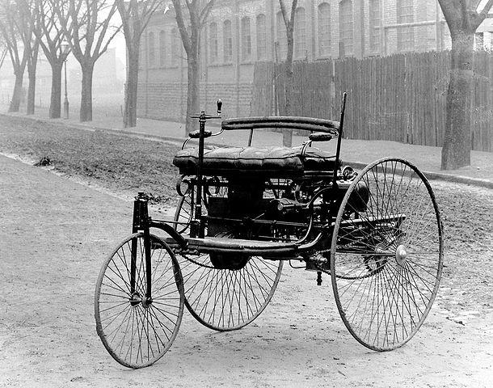
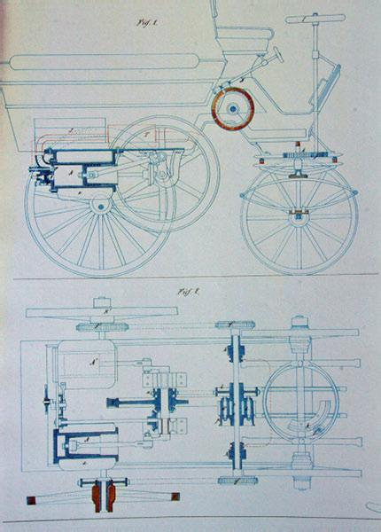
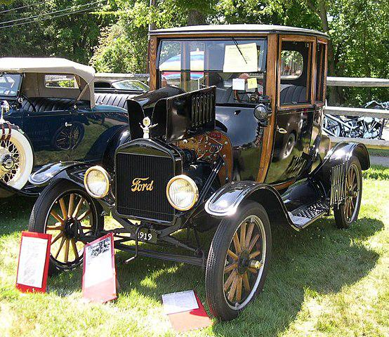

Qual foi o primeiro carro do mundo?
Descubra as polêmicas por trás da invenção do primeiro carro do mundo
Cravar o ineditismo de qualquer item é sempre difícil, afinal, as novas invenções vêm de aprimoramentos do passado. Por isso, dizer qual foi o primeiro carro do mundo é uma tarefa árdua e controversa, assim como é o debate entre americanos e brasileiros sobre quem criou o primeiro avião, os irmãos Wright ou Santos Dumont.
Primrito relatos dos precursores dos carros
Há relatos de veículos com roda movidos a vapor no século 17, na China, porém a comprovação das informações é difícil pela falta de documentação. É bastante possível que vários inventores tenham trabalhado em diferentes pontos ao longo dos séculos 17 e 18, conforme os motores a vapor iam se desenvolvendo. Em 1769, temos a invenção do engenheiro francês Nicolas-Joseph Cugnot, um veículo (similar a uma carroça) movido por um motor a vapor. Até hoje, muitos o consideram o inventor do carro, afinal o veículo se movia sozinho, propelido pelo motor a vapor e uma grande caldeira. O sistema rendia à invenção a velocidade de 7,8 quilômetros por hora. Após uma série de testes, o projeto foi abandonado, mas serviu de base para a popularização de veículos movidos a vapor.
Ironicamente, também foi de Cugnot o título de primeiro acidente com carro da história, o francês se chocou contra uma parede. O complicado sistema de alavancas de direção parece não ter funcionado adequadamente, e ele não conseguiu frear a pesada máquina.
Primeiro carro a combustão
Durante o século 19, motores a combustão foram desenvolvidos, e muitas pessoas trabalhavam em uma maneira de atualizar os “carros”. Em janeiro de 1886, o engenheiro alemão Karl Benz patenteou a Benz-Patent Motorwagen, um carro com motor monocilíndrico movido a gasolina. Benz é considerado, por muitos, o inventor do carro moderno, sua empresa posteriormente se tornou a respeitada Mercedes-Benz.
O motor do carro desempenhava uma potência máxima de 0,75 cavalo-vapor (cv) a 400 rotações por minuto (rpm), atingindo, com isso, a velocidade máxima de 16 quilômetros por hora (km/h).
As especificações podem parecer ruins, mas em um mundo movido a cavalos, o feito foi revolucionário. Alguns dos defensores de Karl Benz como inventor do carro chamam a atenção para o fato de que esse foi o primeiro modelo a ser produzido para ser comercializado, diferentes de outros possíveis candidatos ao título.
polêmicas
Alguns pesquisadores apontam para a invenção do austríaco Siegfried Marcus, em 1870, como o primeiro carro. O veículo era movido a motor de combustão, mas foi pensado inicialmente como motorizado de transporte de carga. Há relatos de que o governo da Alemanha nazista tenha apagado registros históricos da invenção devido à origem judaica de Marcus.
Outro candidato a primeiro carro do mundo foi a invenção do francês Édouard Delamare-Deboutteville, em 1884. Ele patenteou um veículo movido a motor bicilíndrico alimentado a gás de petróleo, com quatro rodas e transmissão por correntes. A invenção, porém, não chegou a ser produzida em série nem comercializada, perdendo relevância histórica.
Primeiro carro produzido em massa
Outro veículo que figura em qualquer lista de primeiro carro do mundo é o Ford Modelo T. O carro é lembrado por ser o primeiro carro produzido em larga escala, sendo desenvolvido por Henry Ford, nos Estados Unidos, e comercializado entre 1909 e 1927, vendendo mais de 15 milhões de unidades.
A inovação de Ford foi produzir um carro barato, confiável e de baixa manutenção. O veículo era destinado para a classe média americana, o valor cobrado pelo carro, em 1909, equivale a quase US$ 25 mil atualmente, mas o carro custava US$ 4 mil em 1925. Assim, milhões de trabalhadores viram uma nova possibilidade de meio de transporte, e as cidades precisaram se adaptar para receber os carros.